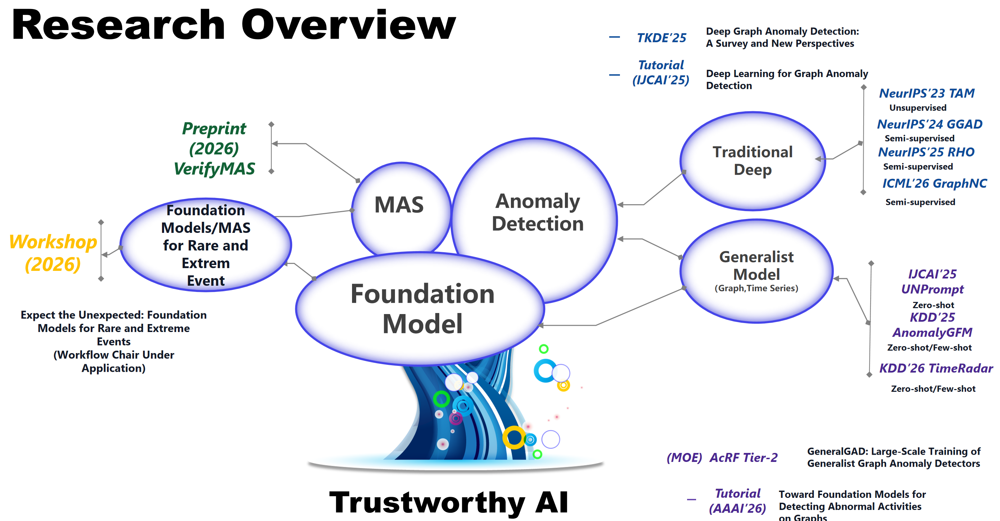

📖 Biography
I am a Ph.D. candidate at Singapore Management University, supervised by Prof. Guansong Pang. My research interests lie in using deep learning and machine learning to build trustworthy AI systems. Currently, I focus on multi agents system reliability, agent post training, and generalist model for anomaly detection. Besides, I also explore the following area
- 🧠 Foundation models for rare/extrem event prediction i.e. "Expect the Unexpected"
- 🚨 Anomaly/Outlier detection (time series, image, video, tabular data)
- 🔗 Graph anomaly detection/representation learning
- 🔧 Agent post-training and calibration for safer and more controllable AI behavior
- 🔒 Safety and security in foundation models
- 📰 Fake news, image and misinformation detection / Fact-checking
I’m excited to work with colleagues at the Machine Learning & Applications (MaLA) Lab, focusing on abnormal/unknown data instance detection and generalized learning algorithms for creating trustworthy continual AI systems.
🧭 Research Overview

Pin
- 🤖 We recently released a LLM multi-agent system failure attribution project VerifyMAS. You're welcome to star ⭐ and follow the GitHub repository.
- 🧩Our tutorial Robust Graph Learning in Finance is accepted in WebConf 2026.
- 🧩Our tutorial Toward Foundation Models for Detecting Abnormal Activities on Graphs is accepted in AAAI 2026.
- 🌐 Our tutorial Deep Learning for Graph Anomaly Detection is accepted to IJCAI 2025.
- 📄 Check out our survey on deep graph anomaly detection: Deep Graph Anomaly Detection: A Survey and New Perspectives and its GitHub repository.
- 📚 We released a GitHub repository summarizing papers on foundation models for anomaly detection: Awesome Anomaly Detection with Foundation Models.
News
- 2026/07: Honored to receive the SMU SCIS Dean's List and SMU Presidential Doctoral Fellowship.
- 2026/06: We are giving a tutorial talk "Robust Graph Learning on the Web", at WebConf 2026.
- 2026/06: Honored to be a student volunteer for KDD 2026, see you in Jeju!
- 2026/05: We recently released a LLM multi-agent system failure attribution project VerifyMAS. You're welcome to star ⭐ and follow the GitHub repository.
- 2026/05: One paper on time series anomaly detection is accepted to KDD 2026.
- 2026/05: AnomalyGFM has been accepted for poster presentation at the CCF Graph Conference 2026, see you in Changchun!
- 2026/05: Honored to be recognized as a Silver Reviewer for ICML 2026. Grateful for the opportunity to contribute to the community.
- 2026/05: One paper on graph anomaly detection is accepted to ICML 2026.
- 2026/4: The survey and TAM paper have reached 100 citations! I sincerely thank everyone for the recognition, support, and encouragement!
- 2026/01: The slides and video of AAAI 2026 tutorial Toward Foundation Models for Detecting Abnormal Activities on Graphs are released.
- 2026/01: One paper on semi-supervised community detection is accepted to TKDE.
- 2025/12: AnomalyGFM has been accepted for poster presentation at the Singapore ACM SIGKDD Symposium 2026.
- 2025/12: I am giving an invited talk "Toward Foundation Models for Detecting Abnormal Activities on Graphs" at Institute of Computing Technology, Chinese Academy of Sciences, BeiJing, China .
- 2025/12: Our tutorial Robust Graph Learning in Finance is accepted in WebConf 2026.
- 2025/11: I am giving an invited talk "Deep Learning for Graph Anomaly Detection" at NJUST, NanJing, China .
- 2025/10: One paper on graph representation learning is accepted to TKDE.
- 2025/10: One position paper on foundation model has been accepted by IEEE Intelligent Systems.
- 2025/09: The website of upcoming AAAI 2026 tutorial Toward Foundation Models for Detecting Abnormal Activities on Graphs is released! See you in Singapore!
- 2025/09: One paper on semi-supervised graph anomaly detection is accepted to NeurIPS 2025.
- 2025/09: Our tutorial Toward Foundation Models for Detecting Abnormal Activities on Graphs is accepted in AAAI 2026.
- 2025/08: Our tutorial Robust Graph Learning in Finance is accepted in ICAIF 2025.
- 2025/08: The slides of IJCAI 2025 tutorial Deep Learning for Graph Anomaly Detection are released.
- 2025/08: Honored to be a student volunteer for KDD 2025 and IJCAI 2025.
- 2025/07: Honored to receive the SMU SCIS Dean's List and SMU Presidential Doctoral Fellowship.
- 2025/06: One survey paper on deep graph anomaly detection is accepted to TKDE.
- 2025/05: The website of upcoming IJCAI 2025 tutorial Deep Learning for Graph Anomaly Detection is released! See you in Montreal, Canada!
- 2025/05: One paper on graph foundation model for GAD is accepted to KDD 2025.
- 2025/05: One paper on graph transformer is accepted to ICML 2025.
- 2025/04: Our tutorial Deep Learning for Graph Anomaly Detection is accepted to IJCAI 2025.
- 2025/04: One paper on zero-shot graph anomaly detection is accepted to IJCAI 2025.
- 2025/04: One paper on tiny-model selection is accepted to TMC.
- 2025/03: One paper on multi-label recognition is accepted to ICME 2025 Oral (15% of all submissions).
- 2025/03: Honored to be a student volunteer for GenAI Workshop at ICLR 2025.
- 2025/02: I will join UIUC iDEA-iSAIL Joint Laboratory as a visiting student in May 2025!
- 2024/10: One paper on time series data imputation accepted to BIBM 2024.
- 2024/09: Survey on deep graph anomaly detection released on arXiv and GitHub.
- 2024/09: One paper on semi-supervised graph anomaly detection accepted to NeurIPS 2024.
- 2024/07: Honored to receive the SMU Presidential Doctoral Fellowship (2024).
- 2024/05: One paper on normality learning for time series anomaly detection accepted to ECML PKDD 2024.
- 2024/04: Honored to be student volunteer at WebConf 2024, Sentosa, Singapore.
- 2024/02: Our PerCom24 paper "DiTMoS" won the Mark Weiser Best Paper Award!
- 2023/12: One paper on diverse tiny model selection accepted to PerCom 2024.
- 2023/09: One paper on unsupervised graph anomaly detection accepted to NeurIPS 2023.
- 2023/01: Honored to be student volunteer at WSDM 2023, SMU, Singapore.
- 2023/01: Survey paper on deep learning for hate speech detection released on arXiv and GitHub.
- 2022/07: Admitted to SMU-SCIS Ph.D. program with full scholarship, starting January 2023.
- 2022/06: Completed Master's degree and joined SMU SCIS as a Research Engineer.
Honors and Awards
- SMU SCIS Dean's List, 2025, 2026
- Google PhD Fellowship Nominee (nominated by the SMU),2026
- SMU Presidential Doctoral Fellowship, 2024, 2025, 2026
- Mark Weiser Best Paper Award, PerCom 2023
- PhD Full Scholarship, Ministry of Education, Singapore, 2023
- Dean Scholarship, Chinese Academy of Sciences, 中科院院长奖 2022
- First Prize, Dean Scholarship, Chengdu Branch, CAS, 2021
Experience
- 🌍 2025/5 - 2025/11 : Visiting PhD student at University of Illinois Urbana-Champaign (UIUC) (Advisor: Prof. Hanghang Tong)
- 🪐 2022/6 - 2022/12 : Research Engineer at Singapore Management University(SMU) (Advisor: Prof. Guansong Pang)
Services
- Program Committee (Selected): ICLR, ICML, NeurIPS, KDD, AAAI, ACM MM, ACL
- Journal Reviewer (Selected): IEEE TKDE, IEEE TNNLS, IEEE TMM, IEEE TSMC
-
Teaching Experiences
- CS425 - Natural Language Communication (Undergraduate), Tutor, Autumn 2024, SMU
- CS709 - Trustworthy ML, Teaching Assistant (PhD), Autumn 2026, SMU
- Student Volunteer: WSDM 2023, WebConf 2024, IJCAI 2025, KDD 2025, ICAIF 2025, KDD 2026